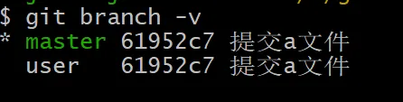
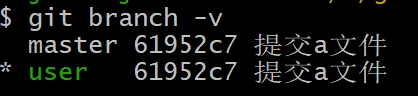
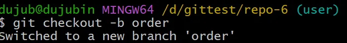
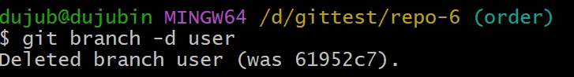

git branch user
可以从硬盘文件中查看分支：`.git\refs\heads`

### 查看当前分支状态
```shell
git branch -v

上图表示当前正在 master 分支上。
git checkout user
git branch -v

git checkout -b order

git branch -d user

```shell
git checkout -b <新分支名> <历史提交id>